- Second meeting, start to create Xibo VM and implemet
Week 3
- Another meeting, look into Xibo features for OP
Week 4
- Start Looking into the implementation of Codelingo-onprem solution
Week 5
- Discussion on open-source code
Week 6
- Struggling with Codelingo implementation
Week 7
- Created haphazardly functioning Codelingo-platform via splice of files
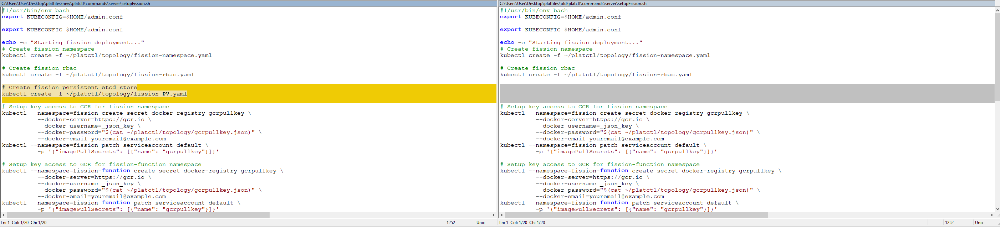
Week 8
- Start looking into GUI for .Lingo creation
Week 9
- Refine GUI for .Lingo creation
Week 10
- looking at BIT Platform problems / BIT DB
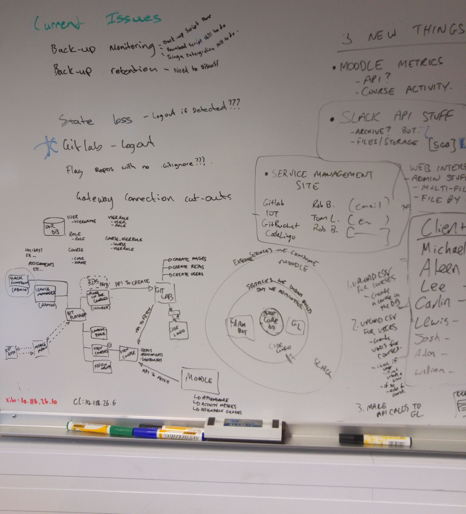
Week 11
- Start Work on CSV Reading
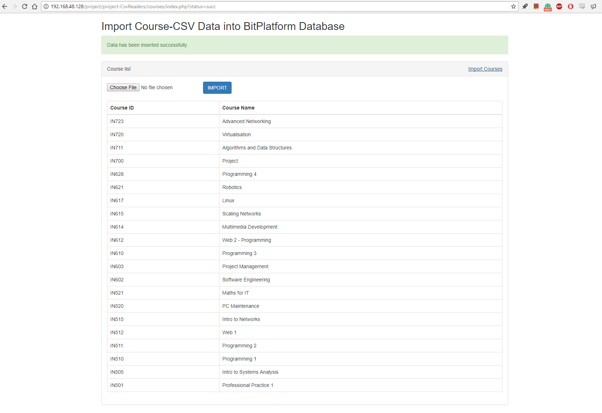
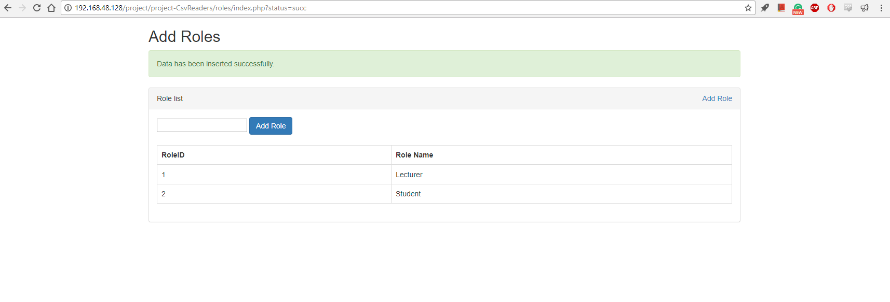
Week 12
- Give in CSV Readers
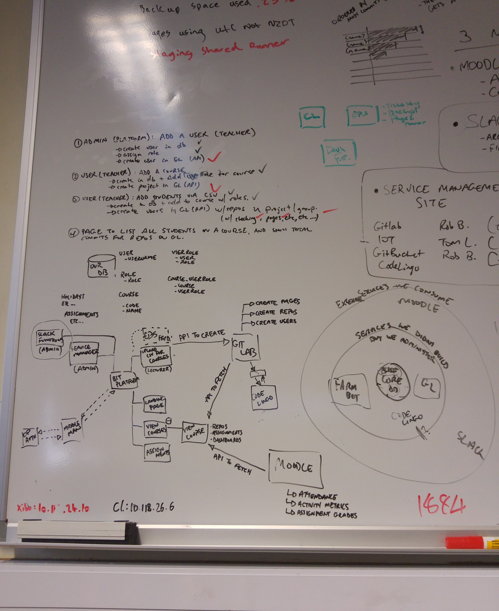
Week 13
- Automated lingo reviews from zombie server
Week 14
- Continue LingoBuilder development
- Create Poster
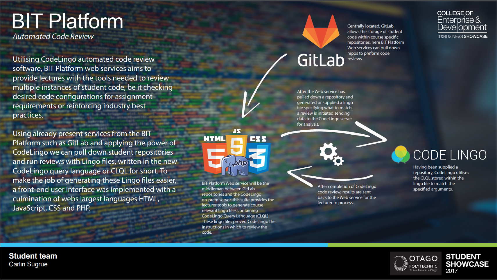
- Create technical documentation
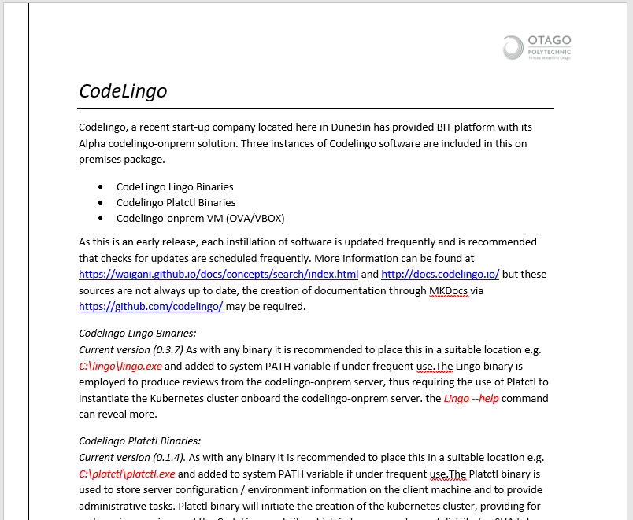
Week 15
- Update OP-Codelingo platform
- Spin up CLWebServer
- Keep reworking LingoBuilder for showcase
- SHOWCASE
Professional Proficiency
Meeting Attendance
4/5
With the application of remote desktop to my personal machine and the majority of my subgroup assigned tasks relating only to myself, my presence within the project room was rather unnecessary. But I made sure that being present at the Monday and Thursday meetings was of paramount importance. Below can be found photos and recordings obtained from these congregations.
First meeting, assigned Xibo research
Second meeting, start to look into xibo
Another meeting, look into xibo features for OP
Discussion on open-source code
looking at BIT Platform problems / BIT DB
Given BIT Platform DB and CSV task
Communication With Peers
4/5
Although my group consisted of just me usually, there where several times when communication with peers was necessary, I believe in these instances I performed with an aura of professionalism. I must however admit that when I found myself in a tight predicament I would not continue to ask pertinent questions and would instead try to resolve the matter myself, such as the discussion of CodeLingo functionality to its respective staff. This would ultimately result in inefficient time management.
Asking Codelingo staff for assistance
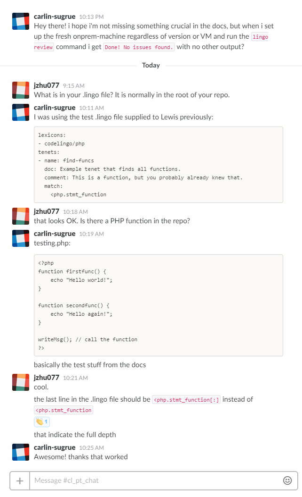
Instructing Software-engineering team with prepared bundle
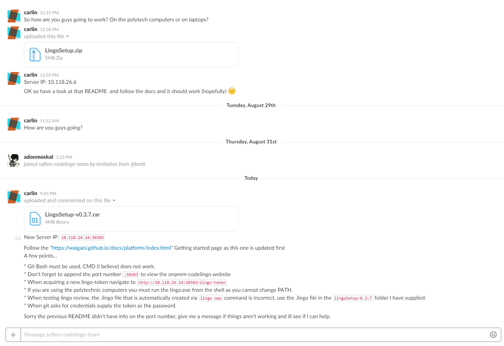
Exchanging updated SQL file and new CSV readers to team-member Lee
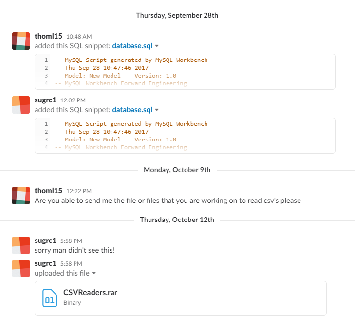
Project Documentation
3.5/5
My documentation throughout the project has unfortunately left much to be desired, as I struggled with CodeLingo software for many consecutive weeks I had failed to record what in particular was happening and in which week, leaving my timeline less robust than I would have hoped. I did however record all attended meeting information through the use of voice and note taking.
Most everything that I have worked upon this semester has been foreign to me, be it the implementation of virtual machines such as Xibo digital signage within vSphere to the strange complexities of CodeLingo. There have been tasks within this project that I have been able to achieve relatively fast and competently, although there have been many instances of problems where I cannot simply Google the question. It was a very frustrating experience and it mentally taxed me some days, but I felt that through it all I did well to find potential issues and solutions.
Trying to make heads or tails of how the Codelingo system functions
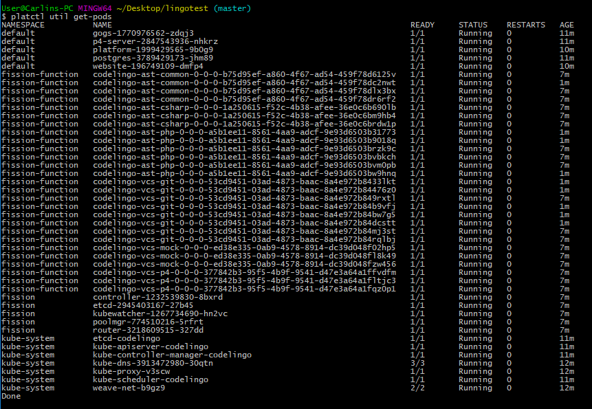
Technical Proficiency
Code Quality
3/5
Due to my projects nature, I haven’t particularly written much code, although I have produced several scripts for the lingo-builder server and the website itself. My strongest technical capabilities come from my Unix knowledge and OS understanding, which helped greatly in the BIT Platform group. Because of my chosen study path leaning more towards the world of systems administration my coding abilities have left my PHP/JavaScript pages suboptimal, but I believe I’m improving!
Code extract from lingo-builder / calling server-side scripts
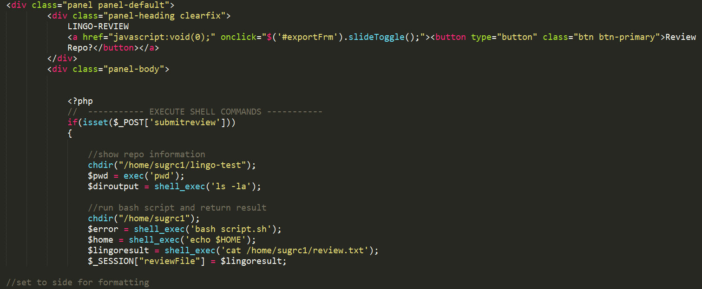
Following Development Best Practices
3/5
I feel that when it comes to best practices, I try my best to make things I develop simple and user friendly whilst also testing in a few various environments. A good example may be me always implementing new updates for CodeLingo software such as the platform or lingo binaries on my own home machine by just utilizing VMWare Workstation. I can then diagnose any potential problems in a well understood environment before pushing to the servers located at OP. However, I understand that one of my largest downfalls is not regularly using industry recognized version controls such as git.
Trying to create a GUI that is simple and understandable
Also in the Pursuit of minimalism
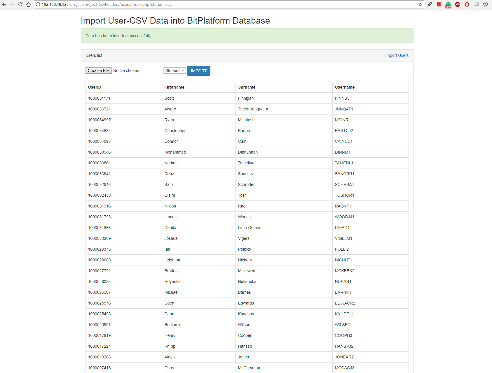
VMs running test on personal environment
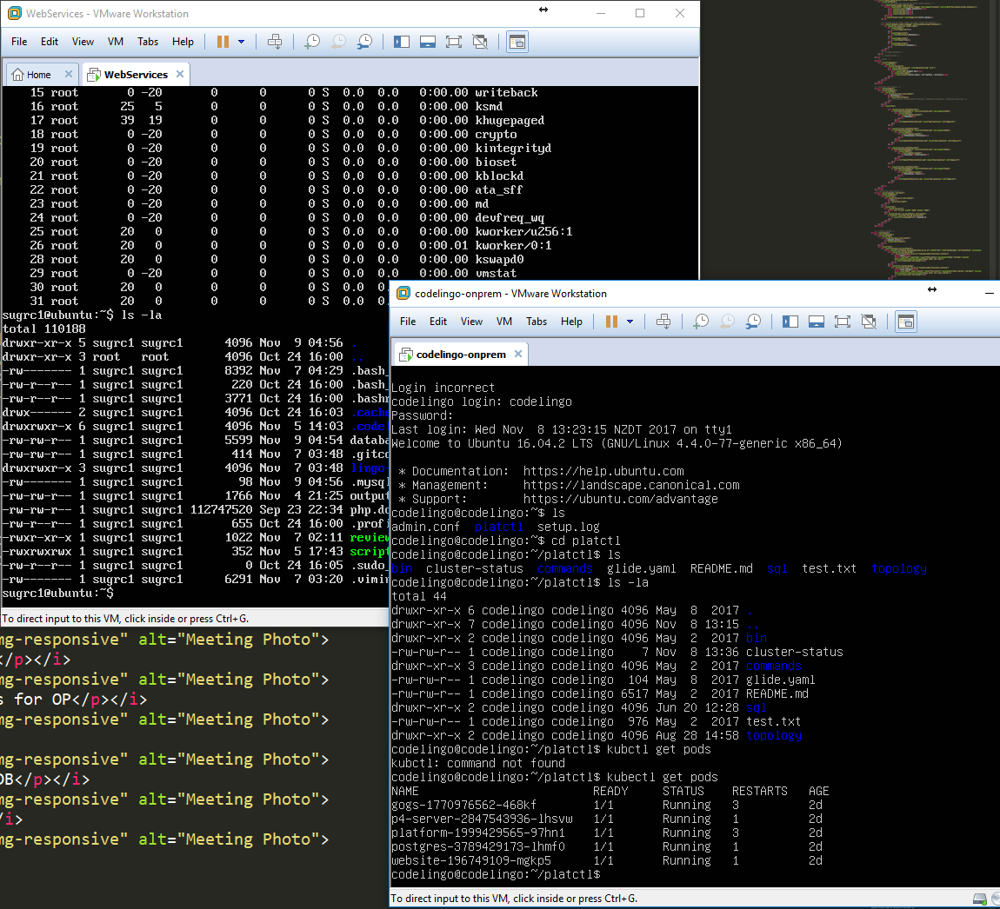
Version Control
3/5
Not the best. I recognize that I implemented proper version control a bit late. As when I was developing my projects it was only me utilizing the code or software, so I only employed the 2 separate backups in 2 different locations approach. Usually I would have my software stored on my personal machine, external hard drive and project machine but as the end drew near I started to employ the use of git.
To little to late
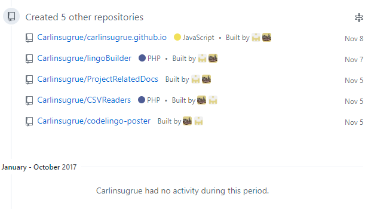
On-site backups
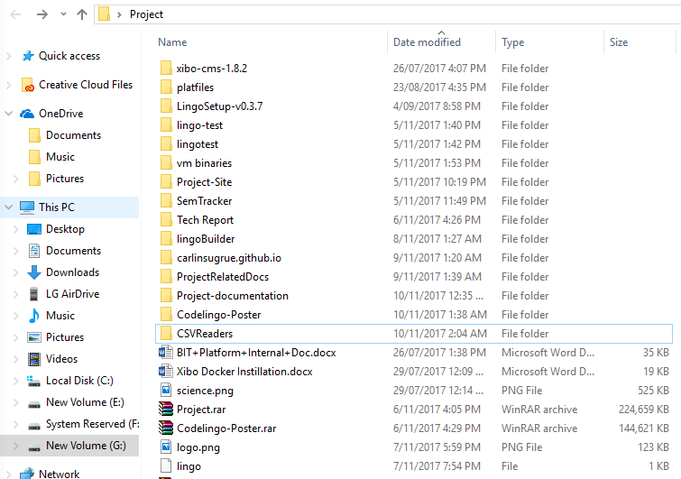
Overall Contribution
4/5
Perhaps it was just the hectic semester but I felt I put a good amount of effort into working on assignments passed to me, It may be a different thing altogether as to how much I was able to produce from this effort. And It’s hard to distinguish how much my work could influence the BIT Platform just yet, as I haven’t fully implemented / understood how powerful the CodeLingo workflow could be when integrated into the BIT Platform Pipeline. It has some great Potential, and I hope that in the advent I may pass project one I could continue to develop upon a proper tool-set for lecturers and students.
I thought my Xibo implementation and layouts where astatically pleasing
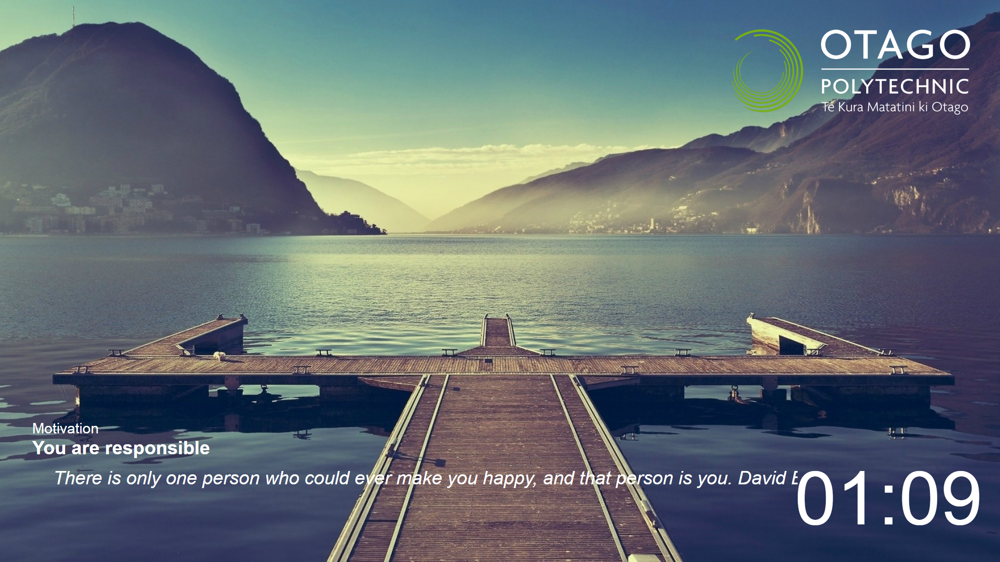
Producing Work that everyone gets to see
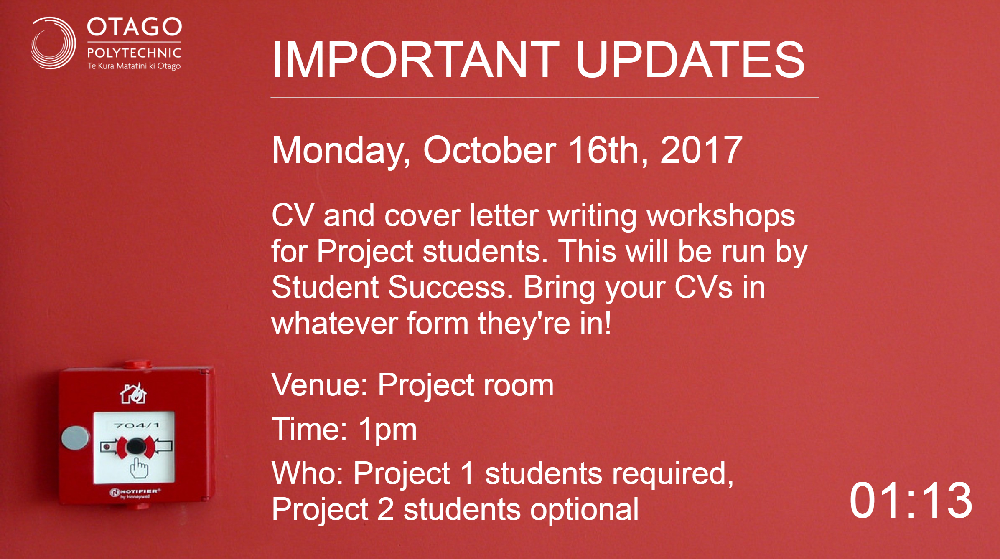
Exploring Xibo features
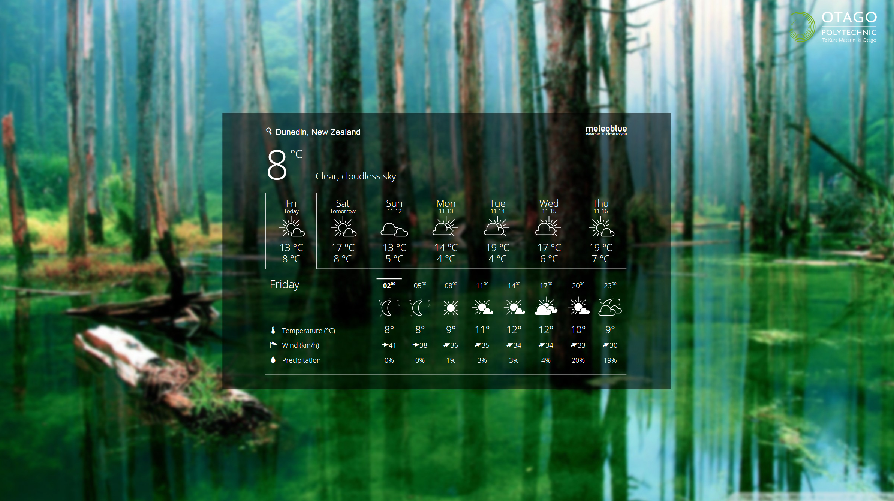
My Poster
Reflective Story
What a semester that has been… software engineering seemed to start off like a slap to the face, throwing most of what I knew about BIT papers out the window. When I was done with the last exam I told Adon “never again” his reply was “you’re not going to like project then” and like most things this semester, he was right, instead of a dainty slap I received a mental Batista bomb. Now I’m not saying that project one filled me with hatred (on the occasion) but it was one of the tougher papers I’ve had to slog through. But much like the quote from Albert Einstein “Adversity introduces a man to himself.” I feel I can take away a lot of valuable lessons now.
One of the hardest lessons I had to come to terms with after summarizing my semester was how much I could have actively done through the project to improve my environment and learning experience, to drown the reader in quotes I feel Teddy Roosevelt accurately portrays this when he said, “If you could kick the person in the pants responsible for most of your trouble, you wouldn't sit for a month.”
To start my semester in project one I had been assigned the task of implementing digital signage to service the display needs of the project room. This started out as research into free and open source digital signage solutions. This came back with Xibo which Lewis had already suggested, no surprises there, so it was off to start creating the initial VM, layouts and campaigns. Once I spun up a Xibo server at home and created the layouts I was quite proud! Threw in a few motivational quotes for good measure and it was ready for the project rooms viewing pleasure! Overall, I enjoyed my time messing with the Xibo CMS and had hoped to contribute to the open source project, that was, until, the following meeting that we had all been fearing (or at least just me) who would be tasked with the start-up company CodeLingo.
The meeting had begun and I had displayed my pride and joy Xibo to the congregation, with the assigned task complete and a body free to ponder another mystery, Adon glances at the board and finds a missing name next to CodeLingo. So, I was to be BIT Platforms Champion of Codelingo, no big deal how hard could it be? Hard. But it didn’t have to be. As I tried to implement the illusive CodeLingo server on the completely foreign op infrastructure there was always some small obstacle to overcome, sometimes I solved it post-haste sometimes I didn’t. I was working by myself, I felt secluded in my suffering, after all most problems that I encounter in life I could surly google to gain a few steps towards comprehension, but no this was completely virgin code, un googleable.
Most of my troubles related to the onprem solution on serval occasions where patched and fixed via a few updates released shortly after, I couldn’t have known that these problems weren’t originating from my side? It was a completely different environment?! But... that is no excuse, and I should have asked. The staff of CodeLingo where more than happy to answer my questions and besides, they write QUERY language for god sake! But even through all the frustration I was adamant to resolve problems I encountered.
Finally showcase day. Fortunately, when in dire need of assistance whilst still developing one of the final pieces of software (lingo builder) to display at showcase Adon in his wisdom tells me to swallow my pride and ask for the much-needed help, the helpful team at CodeLingo where right on hand to lend their knowledge and thus the showcase had somewhat of a demo.
In conclusion, there was a lot of anguish and despair strewn throughout, but these states of mental being where merely the result of ignorance. I aim to take these invaluable lessons with me into project two (should I pass) and strive to approach my prior work with more conviction and clarity.